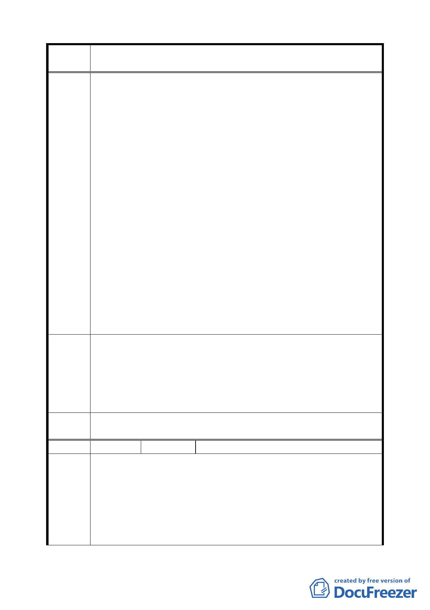

案 名 配合第二代展會中心變更臺北市南港經貿園區特定專用區 C12、
C13 街廓商業區及周邊商業區細部計畫案
經計算發現，未來若依據二代會展細部計畫規定做為第三種
商業區使用，其實際允建容積率僅 180%，較依據南港經貿園
區細部計畫規定做為供商務設施使用之實際允建容積減少
40%。
四、依據中央法規標準法第 18 條之精神，細部計畫係都市計畫法
所授權委任立法，南港經貿園區細部計畫中既已規定以市地
重劃方式辦理，則依法於辦理市地重劃後，即可依據其規定
之土地使用強度做商業使用。今非我等不願以市地重劃方式
回饋，而是因 貴府未完成市地重劃相關作業，即以「未回
饋前，其使用項目、建蔽率與容積率仍維持原第三種住宅區
之規定」應付，且二代展會細部計畫所規定之方式，等同將
我等土地捐出做開放空間，僅得將允建樓地板面積移出，其
與市地重劃回饋土地方式何異？依法律比例原則，我等僅要
求 貴府對於前後法規規定應以同等比例原則維護我等應有
之權益，並非要求 貴府逾越法規規定、圖謀我等之不當之
利得！
五、我等樂意配合政府辦理開發，以促進地方發展，期盼 貴府於
計畫開發之時，體恤我等先人遺產歷經 貴府多次徵收，所
剩棲身之所，能予妥善計畫考量，以維小老百姓合理之權益。
一、陳請考量我等原有權益與未來開發之實務，於二代會展細部
建議辦
計畫中規定，地區編號 A 土地允建容積（樓地板面積）申請
做住宅使用，其允建容積率不得超過 225%；做商業使用，其
法 允建容積率不得超過 220%。
二、有關二代會展細部計畫中之獎勵規定，我等建議內容如另案
陳情書。
委員會
決議
本地區已提高更新地區整併之容積獎勵，可達繁榮周邊之效。
編號 ７
陳情人 陳澄雄 君等 16 人
一、貴府為鼓勵老舊地區配合第二代展會中心建設期程進行都市
更新，於該細部計畫指定我等所有土地所在街廓（地區編號 A）
陳情理
由
與地區編號 B、C 街廓整併辦理都市更新，整體規劃集中留設
開放空間於地區編號 A，擬以容積獎勵促成容積移轉、留設第
二代展會中心完整之開放空間，期達成地主與政府之雙贏願
景。
二、有關 貴府為民眾權益著想之立意，銘感於心，然該細部計
6